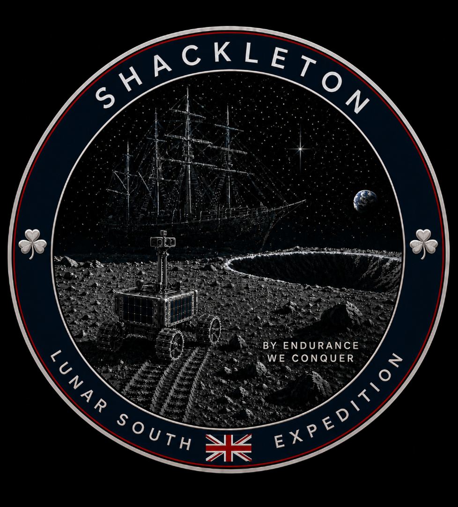
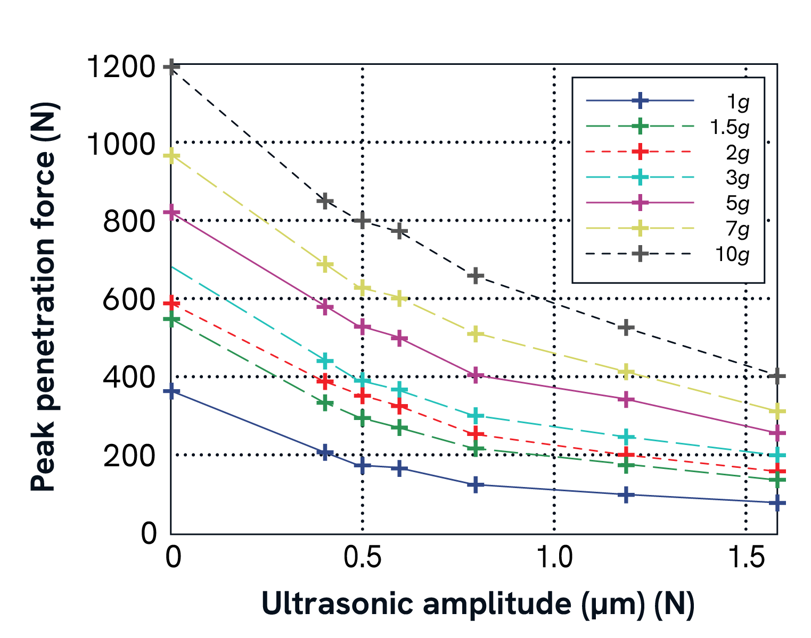

The rover will have four-wheel skid steering, an extendable vertical mast for illumination and communications, and a vertical penetration payload. The chassis will have solar panels and contain a battery and phase-change pack sized to permit one-hour sorties to the dark followed by a ten-hour recovery window.
A compact four-wheel rover platform capable of traversing uneven regolith, shallow crater terrain, and transition zones between illuminated and shadowed regions. The mobility architecture builds upon the UK’s long heritage in planetary robotics and autonomous systems, including technologies developed for the Rosalind Franklin Mars rover programme.
Communications are S-band to the lander via a directional patch antenna mounted on a deployable vertical mast with yaw control. The mast also provides illumination and down-looking imagery for path planning near difficult polar terrain and low-angle lighting conditions. This type of mast architecture is made in the UK by companies such as Rolatube.
The rover carries a sonicated penetrator system intended to investigate volatile-bearing material beneath the lunar surface without conventional rotary drilling. Stepped heating would drive liberated volatiles towards an ion-trap mass spectrometer, allowing discrimination between adsorbed water, pore ice, ice-cement, and associated compounds within the regolith.
Traditional rotary drilling systems rely upong gravity to generate weight-on-bit and react drilling torque. In low-gravity environments such as the Moon, and with a target rover mass of just 20kg, generating sufficient force becomes significantly more difficult. This creates engineering challenges for lightweight robotic missions attempting to investigate subsurface material. Permafrost terrain is very hard and can sometimes bond to penertration tools. Our rover will therefore examine other concepts, such as sonicated tools and - if required - the pulse-elevator system. These are known to operate with lower reacted forces and torques than conventional systems.
When penetrating granular materials, everyone instinctively understands that you need to wiggle a tool to make it slide in more easily. This is because small movements disrupt the load-bearing chains of particles that transmit force from the tool to the far-field.
Research in the UK has indicated that this movement can be applied at the micron scale using ultrasonic vibration, fluidising granular materials and reducing the force required to penetrate a solid-state device by up to an order of magnitude.
This effect has been observed in ambient and hypergravity (see figure), in reduced gravity, and in vacuum. It has the potential to make the subsurface available to rovers such as Shackleton, which are at least an order-of-magnitude smaller than other currently-concieved platforms such as VIPER and LUPEX/Chandrayaan-5.

The Shackleton concept also investigates ultrasonic-assisted penetration techniques intended to reduce required drilling force in low-gravity environments. Rather than relying entirely upon weight-on-bit and rotary torque, high-frequency vibration can help fracture and mobilise compacted regolith and volatile-bearing material.
This approach is particularly attractive for lightweight robotic missions operating on the Moon, where a 20kg rover experiences only limited effective weight under lunar gravity. The concept builds upon UK research heritage in planetary instrumentation, precision mechanics, and compact robotic exploration systems.